Portfolio
Problem Formulation & Cultural Ethics
The core challenge was to design a spatial experience for an active religious community without turning their sacred rituals into a game. I established a "Cultural Observer" framework to solve this. Before entering the environment, users must agree to specific ethical boundaries:
- Deities as Context, Not NPCs: Deity statues function only as spatial anchors. They do not give tasks and users cannot interact with them.
- Zero Ritual Simulation: I removed mechanics like virtual incense offering or boat burning to prevent religious misrepresentation.
- Focus on Craftsmanship: The system directs user attention toward architecture, woodworking, and social organization.
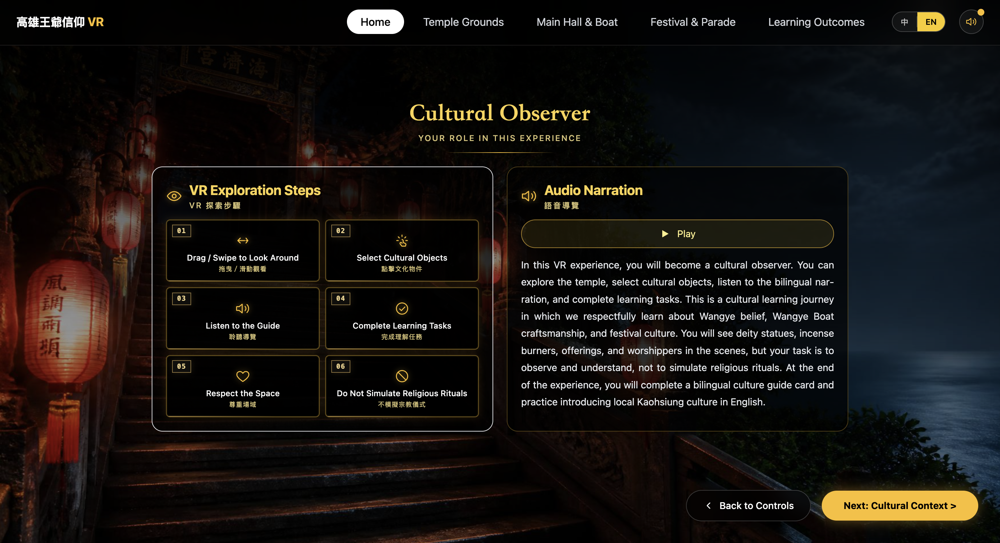
Dual-Layer Spatial Architecture
Loading multiple high-polygon 3D models simultaneously would crash mobile browsers. To optimize WebGL memory and ensure cross-platform performance, I engineered a dual-layer architecture:
- Macro Navigation: I used 360-degree panoramas for the Temple Grounds. This provides spatial context with minimal performance cost. Hotspots route the users logically through the space.
- Micro 3D Inspection: High-polygon artifacts, such as the bronze Incense Burner and the wooden boat blueprints, are isolated in dedicated interactive modals. I implemented real-time
OrbitControlsso users can rotate and zoom into these specific models without overloading the main scene.
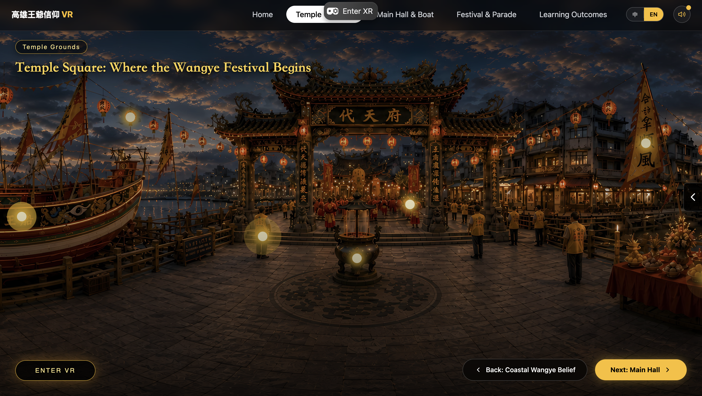
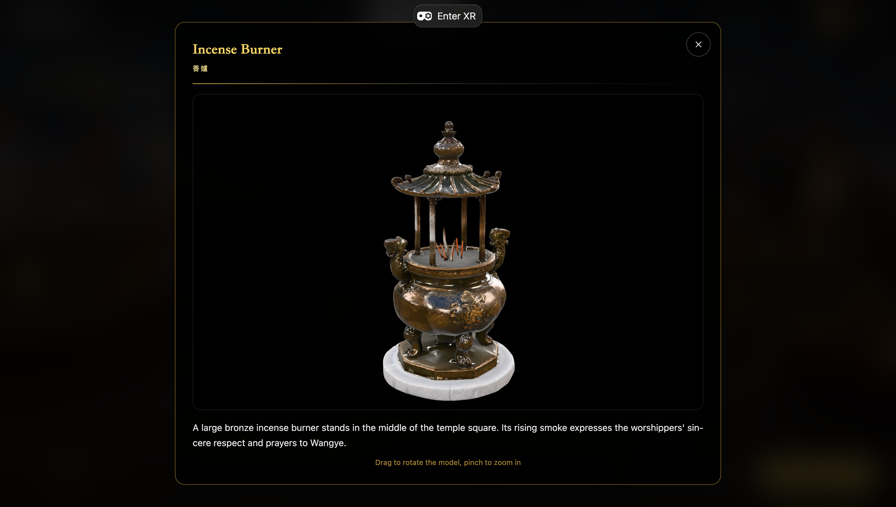
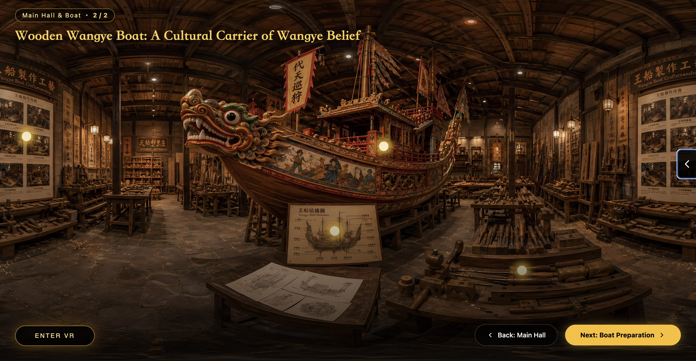
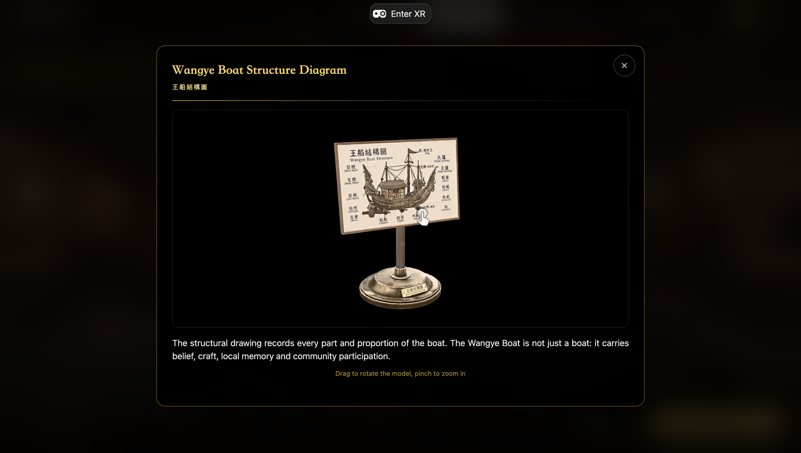
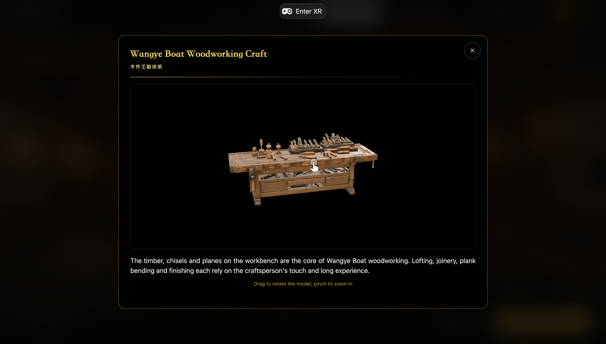
Empirical Usability Testing
Validating the spatial system with real users was critical. As the Project Lead, I organized testing sessions in both controlled laboratories and actual classrooms to evaluate the interaction design.
- Mitigating Cybersickness: During early laboratory tests, participants reported dizziness when rotating their view freely. I solved this by adding rotational damping to the controller grips and replacing continuous locomotion with discrete scene transitions.
- Classroom Field Deployment: In educational settings, I configured the system to cast the Meta Quest 3 viewport synchronously to a smart-board. This allowed one student to navigate while the rest of the class observed the same frame, proving the system's viability for group learning.
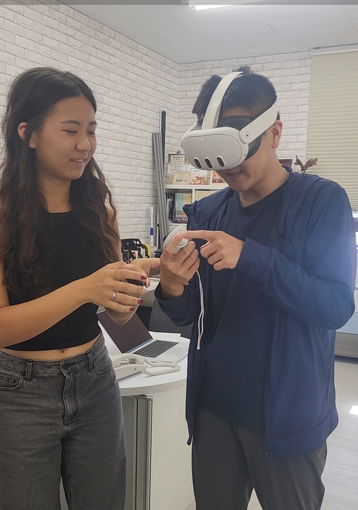
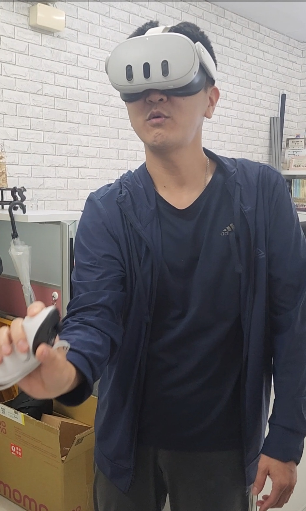
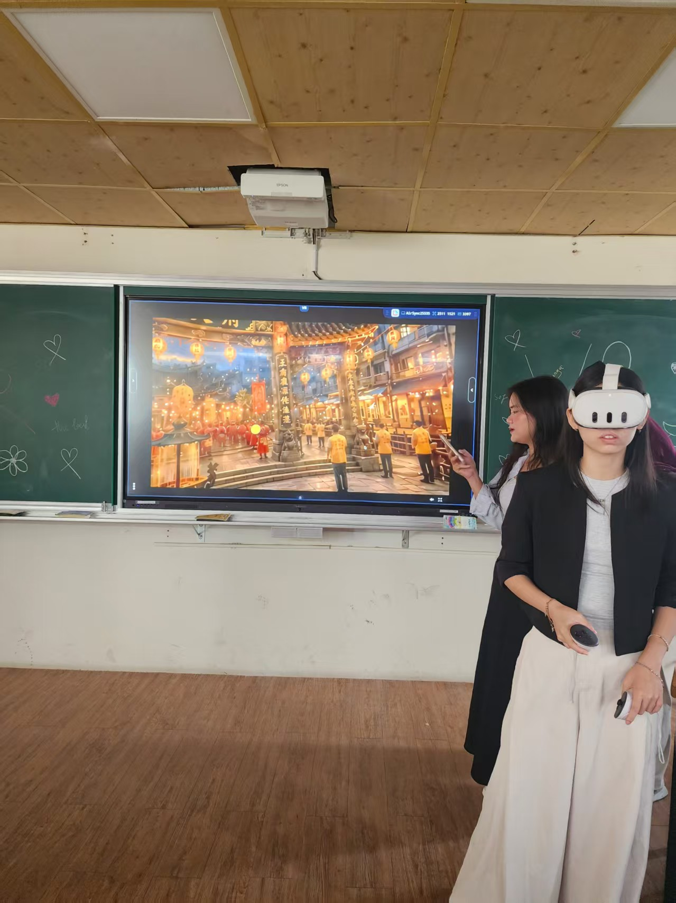
Pedagogical Scaffolding & Emotional Keepsakes
A spatial tour is incomplete if users leave without active reflection. I designed two final tasks to close the learning loop:
- Bilingual Culture Guide Card: I built a production task based on CEFR B1 to C1 language standards. Users select a cultural topic and a difficulty level to generate their own bilingual summary card. The system provides structured sentence frames to support different proficiency levels.
- Digital Peace Sachet: I translated the traditional maritime prayer for safe passage into a downloadable digital wallpaper. This provides users with a cultural keepsake without simulating a religious blessing rite.
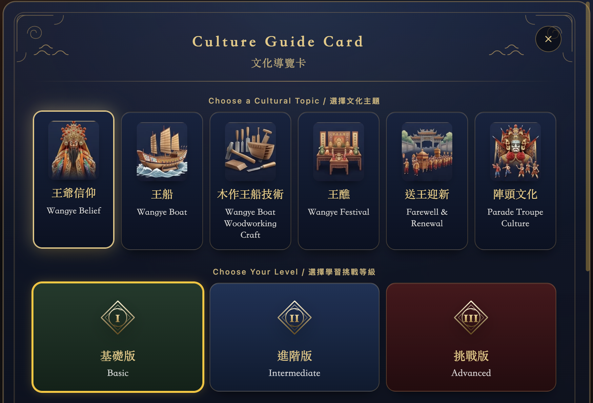
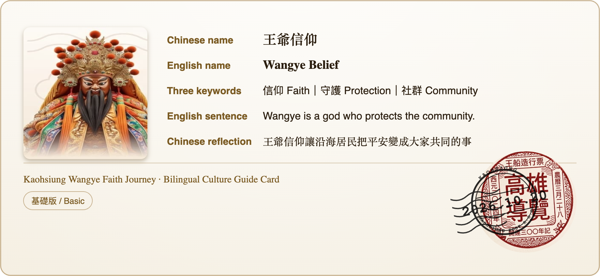
Team & Funding
Six contributors, convened under the TEEP Fellowship at National Kaohsiung Normal University. I led the project and owned the interaction architecture, the Cultural Observer framework, and the rapid WebXR prototyping workflow. The work below was carried out by the people named beside it.
Kooi Li Yng
Project Lead, Learning Experience (LX) Designer & Interaction Architect
Sofia Maulidia
3D Asset Creator
Bunga Rufaida Adya
UI & Web Support
Le Thao Linh
Cultural Content Specialist
Clarissa Dyan Widjaja & Dinh Huu Nghiem
VR QA & Testing
Taiwan Experience Education Program (TEEP)
Ministry of Education, hosted by National Kaohsiung Normal University (NKNU) · 2026